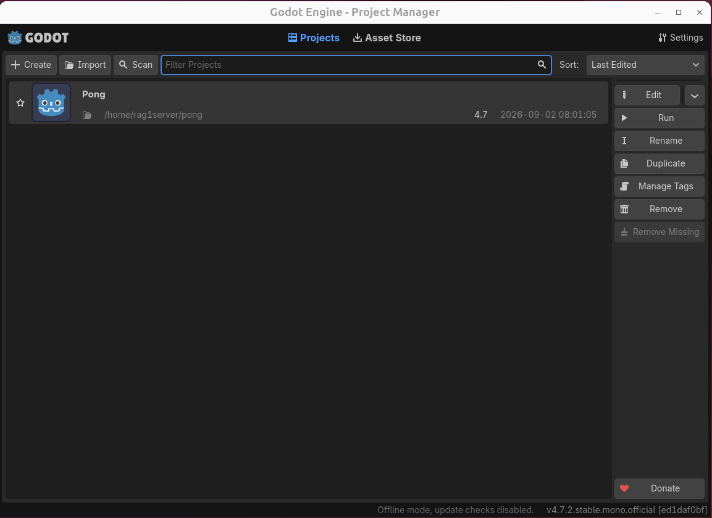
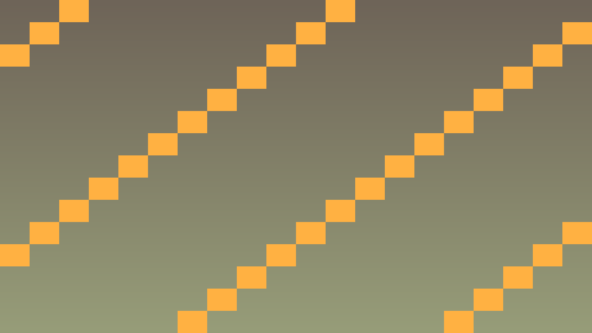

Tavs šīs stundas izaicinājums: Instalēt Godot 4, izveidot pirmo projektu un saprast Godot editor (redaktora) galvenās daļas.
Priekšzināšanu robeža: uzdevumos izmanto tikai iepriekš apgūto un šīs lapas teorijas/koda piemēros parādīto. Ja parādās jauna komanda vai rīks, vispirms atrod tās paraugu teorijas blokā.
Godot 4 Engine (Godot dzinējs) ir bezmaksas, atvērtā koda spēļu dzinējs ar visu nepieciešamo 2D un 3D spēļu izstrādei. Šajā kursā Godot tiek lietots kā vizuālais redaktors, scēnu pārvaldnieks un spēles izpildes vide, bet spēles loģika tiek rakstīta C++ ar GDExtension.
Godot projektā ir svarīgi atšķirt trīs slāņus: projekta iestatījumi nosaka logu un palaišanu, scēnas glabā objektu struktūru, bet C++ klases piešķir objektiem uzvedību. Ja šie slāņi tiek jaukti, vēlāk ir grūti saprast, vai kļūda ir editorā, resursā vai kodā.
Editor (redaktora) galvenās daļas:
Renderera izvēle: ja dators ir jauns un grafikas draiveri ir atjaunināti, izvēlies Forward+. Ja skolā ir vecāki datori vai virtuālās mašīnas, Compatibility bieži ir drošāka izvēle. Pong ir 2D projekts, tāpēc mācību rezultātu tas būtiski nemaina.
# Godot 4 instalācija
# 1. Lejupielādē no godotengine.org/download
# 2. Izpako ZIP
# 3. Palaiž godot.exe (Windows) vai ./godot (Linux/Mac)
# 4. Project Manager → New Project// Kursa programmēšanas slānis būs C++ GDExtension klase.
// Šis ir virziens, nevis vēl pilns 1. stundas kods.
class PongProjectReadiness {
private:
bool godot_installed = false;
bool project_created = false;
bool git_initialized = false;
public:
bool is_ready_for_cpp() const {
return godot_installed && project_created && git_initialized;
}
};Atpazīsti šīs stundas galveno ideju un sasaisti to ar gala projektu Pong.
.hpp, .cpp vai Godot scēnas failā, nevis uzreiz lielu funkciju.klases_punkti, zvana_taimeris, pazudusais_markieris vai kafijas_pauze; mazliet humora drīkst, bet kodam jāpaliek skaidram.Izmanto šīs stundas prasmi nelielā, strādājošā projekta daļā.
.hpp, .cpp vai Godot scēnas failā, izmantojot teorijas piemēru kā sākumpunktu.Pārbaudi risinājumu, salīdzini rezultātus un atrodi, ko uzlabot.
Pievieno nelielu radošu uzlabojumu ar klases dzīves piemēru, nepārsniedzot apgūto vielu.
Uzlabojumi, kas padara darba vidi ērtāku.
Node2D, lai pierastu pie iebūvētās dokumentācijas.

#include <godot_cpp/variant/string.hpp>
using namespace godot;
struct ProjectSetupReport {
String project_name = "Pong";
String main_scene = "res://main.tscn";
bool uses_cpp_gdextension = true;
bool has_git_repository = true;
bool can_continue_to_lesson_1_2() const {
return project_name == "Pong"
&& main_scene == "res://main.tscn"
&& uses_cpp_gdextension
&& has_git_repository;
}
};